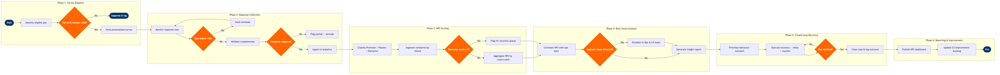

| Step | L4 Step Name | KPI / Target | Pain Point / Risk | Gate |
|---|---|---|---|---|
| 1.1 | Identify post-flight survey eligible pax | Eligible pax coverage ≥ 95% of boarded passengers | Altéa passenger records may have missing or stale email addresses when bookings originate from OTA channels without email pass-through, reducing survey reach by up to 20% | |
| 1.2 | Validate opt-in status and contact data | Suppression accuracy 100% — zero survey sends to opted-out contacts | GDPR and CCPA compliance requires real-time suppression list sync between Altéa loyalty database and Salesforce Marketing Cloud; sync lag of >4 hours risks regulatory breach | ⚠ |
| 1.3 | Generate personalised survey link and dispatch | Survey dispatch latency ≤ 24 hours post-arrival; email deliverability ≥ 97% | Qualtrics dynamic survey personalisation requires clean flight-level metadata from Altéa; missing cabin class data causes generic survey routing, degrading response quality for premium cabin feedback | |
| 2.1 | Monitor survey response rate by flight cohort | Target survey response rate ≥ 20%; industry benchmark ~15–18% | Response rates on short-haul routes (<90 min) are structurally lower (8–12%) due to rapid passenger disengagement post-flight; blended NPS may over-index on long-haul sentiment | ⚠ |
| 2.2 | Send reminder to non-responders at 48 hours | Reminder lift in response rate ≥ 5 percentage points; max 1 reminder per passenger | Over-surveying risk: passengers who received a complaint follow-up (CX-05) or loyalty communication (CX-01) within the same 72-hour window must be suppressed from reminder sends to avoid fatigue and NPS score inflation | |
| 2.3 | Validate response completeness and ingest to analytics | Partial response exclusion rate ≤ 5% of total submissions; ingestion latency ≤ 1 hour | Qualtrics partial completion records (pax abandoned mid-survey) can corrupt NPS scoring if included; no native auto-exclusion rule in Qualtrics XM without custom workflow configuration | ⚠ |
| 3.1 | Classify respondents as Promoter, Passive, or Detractor | NPS score = (% Promoters − % Detractors); target airline industry NPS ≥ 40 | Qualtrics NPS calculation runs at batch rather than real-time; daily NPS score may lag 12–18 hours behind actual flight completions during peak travel periods, delaying detractor recovery initiation | |
| 3.2 | Perform text analytics on verbatim comments | Auto-classification accuracy ≥ 85% vs. manual coding sample; ≤ 10% uncategorised verbatims | Qualtrics Text iQ topic models require periodic retraining as language patterns evolve; stale models misclassify emerging complaint themes (e.g. NDC booking friction) into legacy categories, masking new failure drivers | |
| 3.3 | Flag detractor responses and route to recovery queue | Detractor case creation latency ≤ 4 hours from survey submission; 100% of NPS 0–3 cases created same day | Qualtrics-to-Salesforce webhook integration requires stable API keys and payload schema alignment; schema drift after Qualtrics XM or Salesforce release upgrades has caused dropped detractor cases in production | ⚠ |
| 4.1 | Correlate NPS scores with operational performance data | Correlation analysis refresh cycle ≤ 24 hours; cover ≥ 90% of surveyed flights with ops data join | Altéa operational data (delay codes, actual arrival times) and Qualtrics survey responses use different flight key structures (Altéa uses PNR/flight leg ID; Qualtrics uses survey metadata); cross-system join requires a maintained flight key mapping table that breaks on schedule changes | |
| 4.2 | Identify systemic failure drivers and escalate | Systemic issues identified within 48 hours of NPS batch; ≥ 80% of flags routed to correct owning department | Cross-functional escalation path for systemic NPS drivers (e.g. catering contracted to LSG Sky Chefs, IFE operated by Panasonic Avionics) lacks SLA enforcement; owning department may dispute root cause assignment without corroborating ops data | ⚠ |
| 4.3 | Generate NPS insight report for leadership | Report published by Monday 08:00 local time for prior week's flights; ≥ 95% data completeness | Manual Tableau report assembly from multiple AWS Redshift views causes inconsistent metric definitions across business units; finance uses different on-time threshold (D15) vs. CX team (D0), creating conflicting NPS driver narratives | |
| 5.1 | Prioritise detractor outreach by severity tier | Tier 1 first contact attempt within 24 hours; Tier 2 within 72 hours | Salesforce Service Cloud LTV flag relies on Amadeus Altéa loyalty tier sync; sync runs nightly so recently tier-upgraded passengers are misclassified as standard for up to 24 hours, delaying priority recovery for high-value detractors | |
| 5.2 | Execute personalised recovery — miles or voucher | Recovery offer acceptance rate ≥ 65%; average goodwill cost per case ≤ $35 equivalent | Goodwill miles crediting via Altéa loyalty API requires PNR match; passengers who booked via OTA without loyalty number attached cannot receive miles recovery without manual agent intervention, increasing handle time by 12–15 minutes per case | ⚠ |
| 5.3 | Confirm recovery satisfaction and close case | Case resolution rate ≥ 80% within 7 days; re-escalation rate ≤ 5% | No automated post-recovery satisfaction check; agents manually follow up by phone or email with no structured close-loop survey, making it impossible to measure whether recovery actions actually reversed detractor sentiment | ⚠ |
| 6.1 | Publish NPS dashboard to operational stakeholders | Dashboard refresh latency ≤ 4 hours; ≥ 200 active monthly dashboard users across CX, Ops, and Commercial | Tableau Server licence costs scale with named users; CX team frequently requests ad-hoc access for seasonal staff or agency partners which requires IT procurement cycle of 5–10 business days, delaying insight access during high-disruption periods | |
| 6.2 | Update CX improvement backlog with NPS-driven initiatives | ≥ 3 backlog items added per monthly NPS review cycle; ≥ 60% of prior-cycle items in active delivery | NPS-driven improvement initiatives require cross-functional commitment from Ops, IT, and Commercial; without formal governance linking NPS driver escalation to change request prioritisation, improvement backlog items stall at department boundaries |